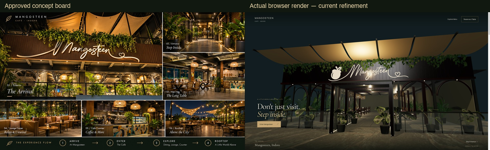
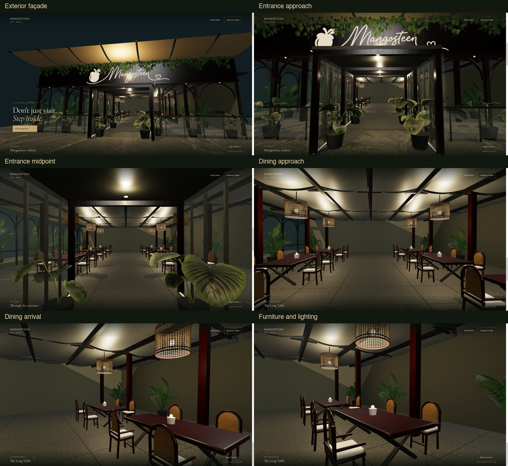
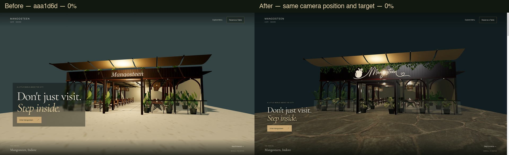
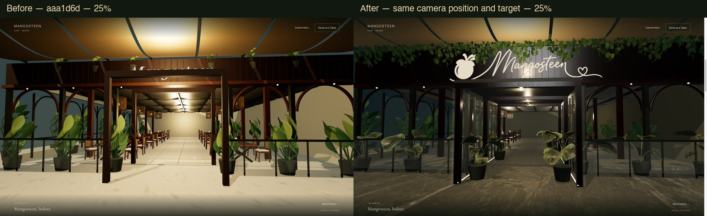
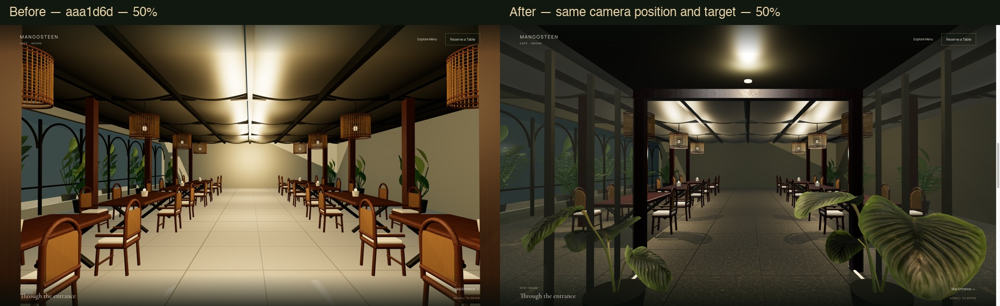
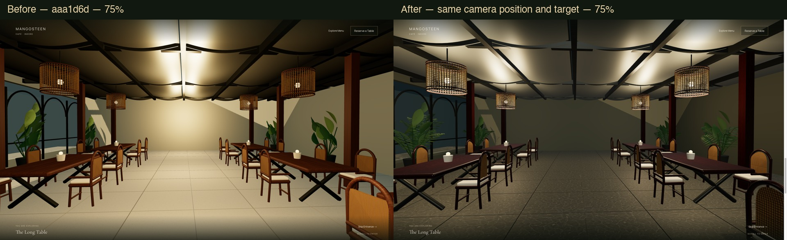
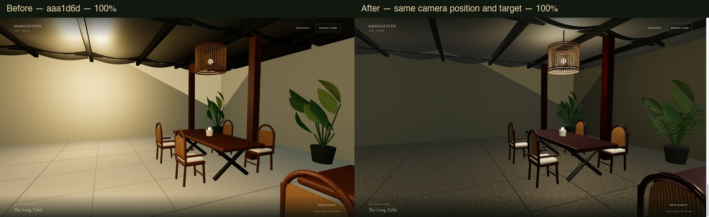

Mangosteen · Entrance refinement
25 November 2026 · baseline aaa1d6d preserved · /experience only · no deployment.
Visual approval outstanding. This is genuine 3D geometry and continuous camera movement. It remains below the concept board's photorealistic standard, particularly in architectural detail, furniture, trailing foliage and indirect lighting. The vestibule and dimensions are inferred.
Full audit and limitations · Measured performance · Open local experience

Refined viewpoints

Before and after · matching cameras

Matching camera viewpoint — 0% of the original path.
Matching camera viewpoint — 25% of the original path.
Matching camera viewpoint — 50% of the original path.
Matching camera viewpoint — 75% of the original path.
Matching camera viewpoint — 100% of the original path.Desktop and mobile recordings
Includes checkpoint captures, a continuous forward/reverse journey, matched viewpoints and wireframe review.
Mobile and geometry evidence
No photos are expanded or crossfaded to simulate the walkthrough. Scanned botanical/wood/stone assets are CC0; the original café photographs remain unchanged.